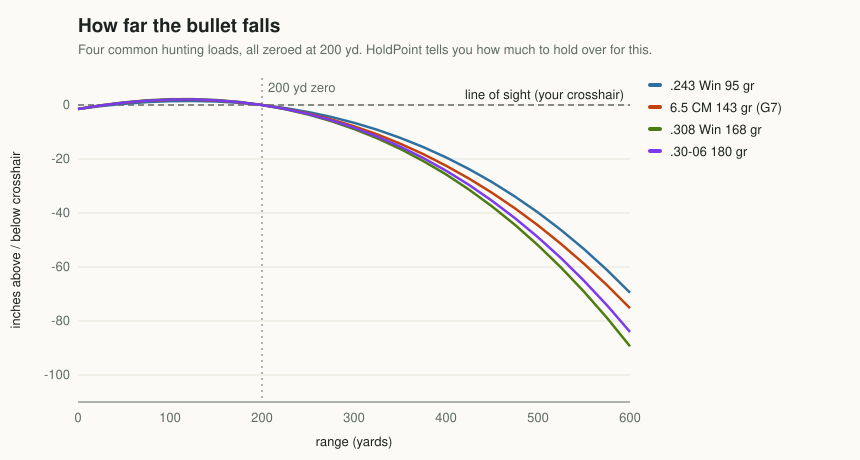
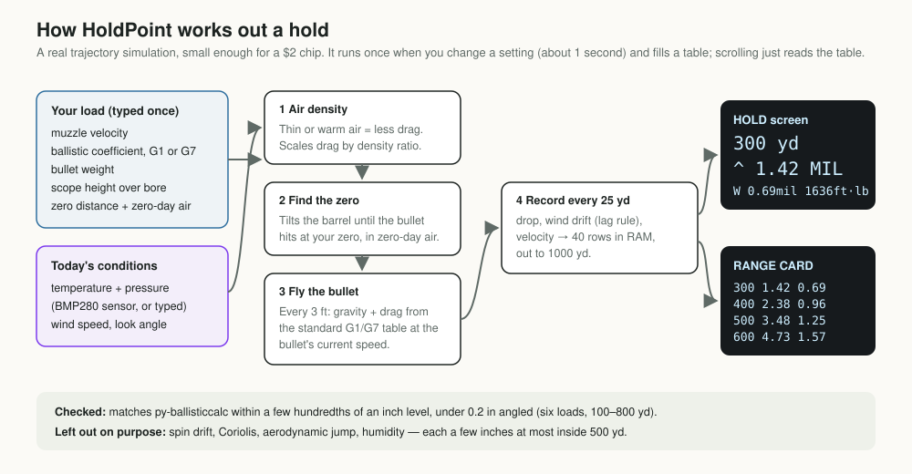
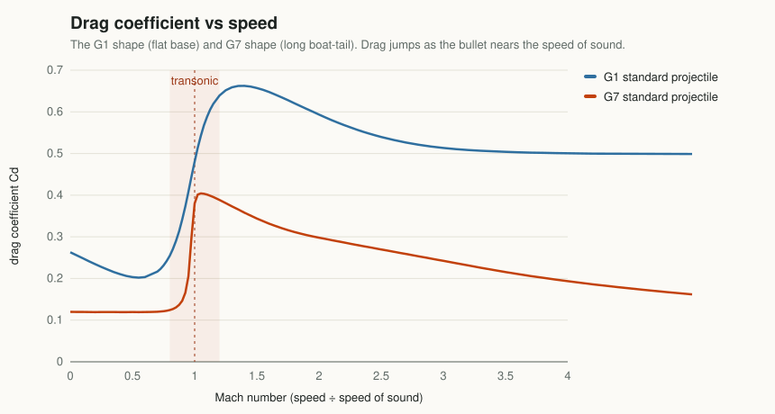
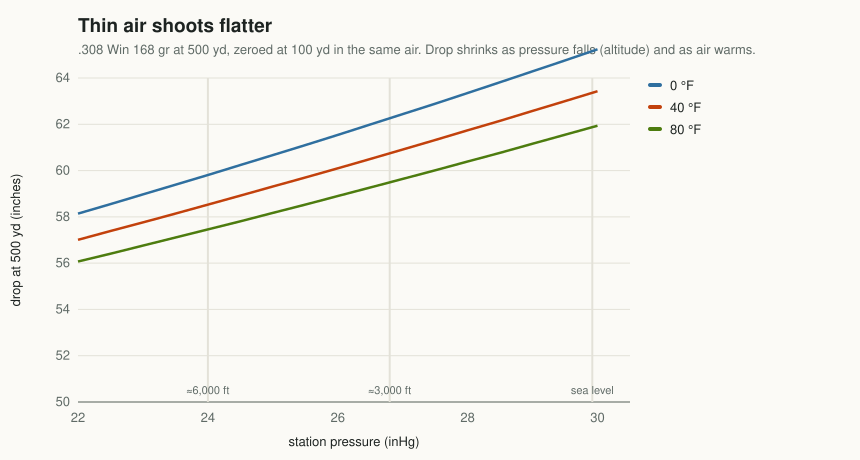
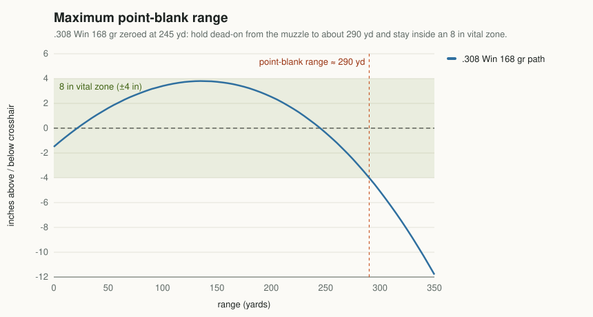
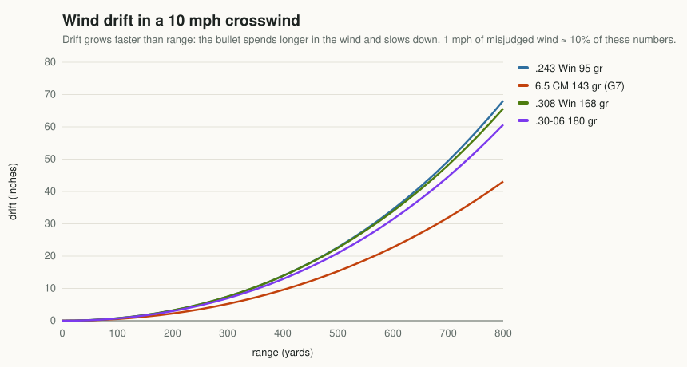
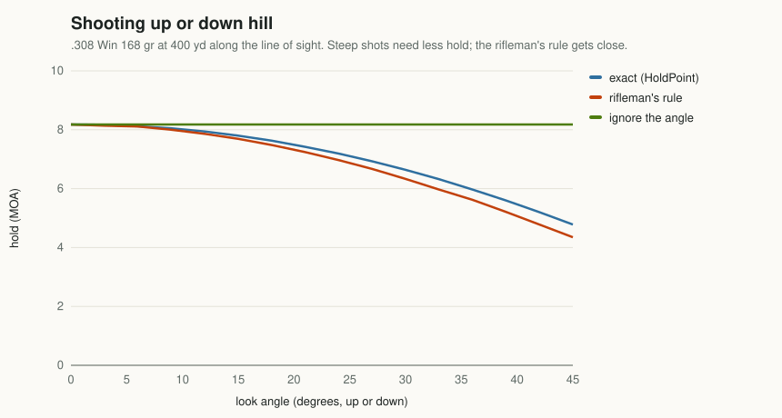
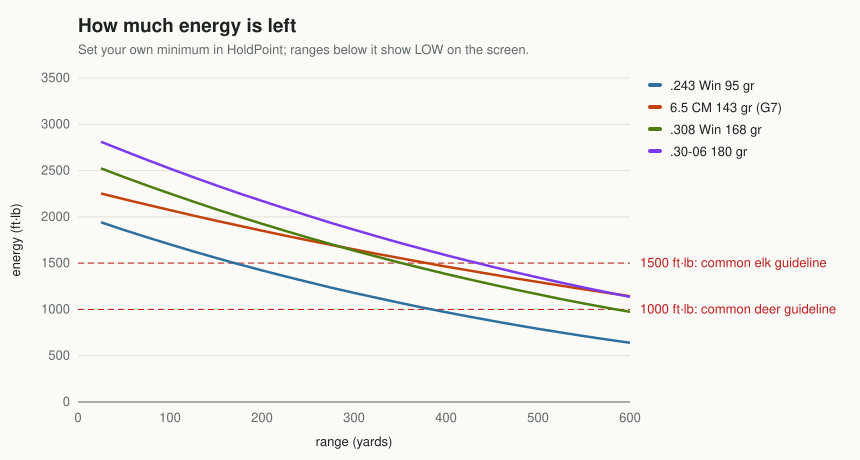
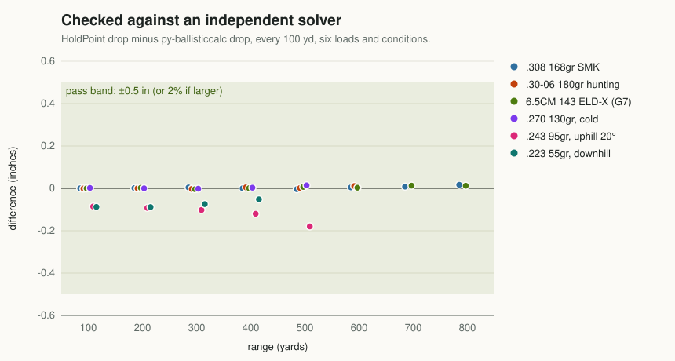
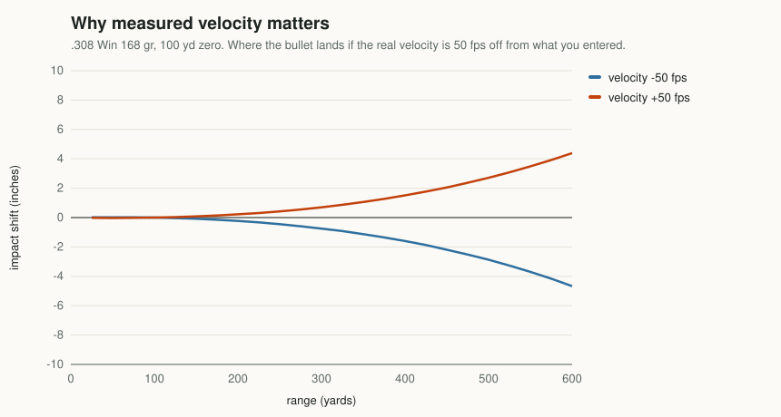

Project 01 · Ballistics
Where do I hold? The physics inside a $5 ballistics calculator
Every hunting rifle shot is a small physics problem: gravity, air, wind and angle, solved in the second before you squeeze. Here is how that problem works, and how a two-dollar chip solves it.

The problem in one picture
Your scope looks along a straight line. The bullet doesn't travel along a straight line. It leaves the barrel tilted very slightly upward, rises through your line of sight, peaks, and falls back across it at the distance you zeroed. Beyond that it falls faster and faster: gravity keeps pulling, and the air keeps stealing speed, so each yard takes a little longer than the last.

"Where do I hold?" means: how far below my crosshair is the bullet at this distance, and which way does the wind carry it? The answer is a pair of angles you either dial on your turrets or hold on your reticle. Getting it right needs four things: how the bullet sheds speed, what the air is like, how your rifle is zeroed, and the geometry of the shot.
From artillery tables to a pocket chip
Gunners have faced this problem since the days of cannon. In the nineteenth century European and American artillery commissions fired thousands of shells, measured how fast they slowed, and boiled the results down to printed tables. The "G" in G1 and G7 is usually traced to one of those efforts, the French Gâvre Commission.1 The trick that made the tables useful was to measure a few standard projectile shapes very carefully once, then describe every other projectile by how it compared.
That idea survives unchanged. What's new is that we no longer need the printed table. A cheap microcontroller can simulate the flight directly, with your bullet, your rifle and today's air, faster than you can bring the scope up.
A bullet as a point in moving air
Once it leaves the muzzle, only two forces matter much at hunting distances: gravity, pulling straight down, and drag, pushing back against the bullet's motion through the air. If you treat the bullet as a point that feels just those two forces, you have the point-mass model. It sits at the heart of most hunting ballistics solvers, usually with extra corrections bolted on.
In words: the bullet's velocity v changes because of gravity g and a drag deceleration pointing backwards along its path. Drag grows with the square of speed and with air density (ρ/ρ₀ is today's density divided by standard). It depends on a drag coefficient Cd that changes with the Mach number M, the speed divided by the speed of sound. The ballistic coefficient BC scales all of it to your particular bullet, and K just makes the units work.
There's no neat formula for the path. So the solver does what you'd do by hand with infinite patience. It takes a small step, works out the forces, moves the bullet, and repeats. HoldPoint steps every 3 feet along the line of sight using a midpoint rule (second-order Runge–Kutta). It looks halfway into each step before committing to it, which keeps errors tiny without thousands of steps.

Drag and the ballistic coefficient
Two things decide how well a bullet holds its speed: how heavy it is for its width, and how slippery its shape is. The first is sectional density, the weight divided by the diameter squared. The second is the form factor i, how much draggier the bullet is than the standard shape. The ballistic coefficient folds them together:
A long, heavy bullet with a sleek nose has a high SD and a low i, so a high BC: it slows down less, drops less and drifts less. Here are the four loads used throughout this article:
| Load | Weight | Diameter | Sectional density | BC | Form factor |
|---|---|---|---|---|---|
| .243 Win | 95 gr | 0.243 in | 0.230 | 0.379 G1 | 0.61 |
| 6.5 Creedmoor | 143 gr | 0.264 in | 0.293 | 0.315 G7 | 0.93 (vs G7) |
| .308 Win | 168 gr | 0.308 in | 0.253 | 0.462 G1 | 0.55 |
| .30-06 | 180 gr | 0.308 in | 0.271 | 0.480 G1 | 0.57 |
A form factor only means something next to the standard it's measured against. The 6.5's 0.93 is close to the G7 shape, which is itself far sleeker than G1. That's the whole G1-versus-G7 story.

The curves differ in shape, not just height. A modern boat-tail bullet's real drag curve looks like the G7 curve scaled down, not the G1 curve. Give it a G1 BC and that number is only exactly right at one speed, which is why some makers list several G1 numbers, each for a velocity band. A G7 BC stays nearly constant across the flight.
A G1 number for a boat-tail bullet is only exactly right at one speed. A G7 number is right all the way down.
Both curves climb steeply between about Mach 0.8 and 1.2. That's the transonic zone, where shock waves form and flight gets less predictable. Hunting shots stay well above it, and HoldPoint stops calculating at 300 fps, far past any sensible range.
Air: density, altitude and temperature
Drag is proportional to air density. Thinner air pushes back less, so the bullet keeps more speed, gets there sooner and drops less. Air gets thinner as you go up, and also as it warms. HoldPoint treats air as a dry ideal gas, which is accurate enough to be the smallest error in the chain:

Station pressure, not the weather report. Weather services adjust pressure to what it would be at sea level, so maps of highs and lows line up. The bullet only feels the actual air around it, which is what an uncorrected barometer reads where you stand: the station pressure. At 6,000 feet the two differ by about 6 inHg, the full width of Figure 5. HoldPoint's optional BME280 sensor reads station pressure directly.
Humidity is left out. Counter to intuition, damp air is slightly less dense than dry air, because water molecules are lighter than nitrogen and oxygen. But the effect on a hunting trajectory is a small fraction of an inch.
Zeroing and point-blank range
Zeroing sets the angle between scope and barrel. HoldPoint doesn't need to know that angle in advance: it finds it. It fires a test trajectory, measures the miss at your zero distance, tilts the barrel by miss ÷ distance, and fires again. Three or four tries usually land within six thousandths of an inch.
It does that in zero-day air, the temperature and pressure you record when you confirm your zero, then flies the hunting shot in today's air. A rifle zeroed at 500 feet in August is corrected for 7,000 feet in November without re-zeroing.
Point-blank range
A useful hunting trick is to zero a little further out, so the bullet never rises or falls more than half the height of the vital zone. Then you can hold dead-on from the muzzle out to some distance without thinking about it. That distance is the maximum point-blank range.

| Load (8 in vital zone) | Best zero | Highest point | Point-blank range |
|---|---|---|---|
| .243 Win 95 gr | 275 yd | +3.7 in | 325 yd |
| 6.5 CM 143 gr | 260 yd | +4.0 in | 305 yd |
| .308 Win 168 gr | 245 yd | +3.8 in | 290 yd |
| .30-06 180 gr | 255 yd | +4.0 in | 300 yd |
Point-blank zeroing trades precision for simplicity. It's a fine way to hunt woods and fields inside 300 yards; past that, a range card or HoldPoint's hold readout is the better tool.
Wind drift and the lag rule
The intuitive model of wind, "the air carries the bullet sideways for as long as it's flying", badly overstates drift. A bullet isn't a leaf. It's moving at 2,500 feet per second and mostly ignores the air's motion. What actually happens is subtler. Drag acts relative to the moving air, so a crosswind tilts the drag force slightly sideways. The result, often called Didion's lag rule,2 is that drift equals the crosswind times the bullet's lag: how much longer it took to reach the target than it would have in a vacuum.

That's why high-BC bullets drift less even at the same speed: they lose less velocity, so they lag less. Drift scales linearly with wind speed, so HoldPoint stores the drift for 1 mph and multiplies. Only the part of the wind blowing across the shot counts:
| Wind from | Counts as | Clock shorthand |
|---|---|---|
| Straight across (90°) | 100% | 3 or 9 o'clock |
| 45° across | ≈ 70% | halfway between, e.g. 1:30 |
| 30° across | 50% | 1, 5, 7 or 11 o'clock |
| Head or tail | ≈ 0% drift | 12 or 6 o'clock |
The math is the easy part. Misjudging 10 mph as 8 moves a 400-yard shot more than every effect the solver leaves out, combined.
Moving animals
Time of flight is about a third of a second at 300 yards. That sounds instant, but an animal walking at 3 mph covers about 4.4 feet per second. Multiply them and you get the lead:
| .308 Win 168 gr | 100 yd | 200 yd | 300 yd | 400 yd |
|---|---|---|---|---|
| Time of flight | 0.12 s | 0.25 s | 0.38 s | 0.53 s |
| Lead, walking (3 mph) | 6 in | 13 in | 20 in | 28 in |
At 300 yards a walking deer moves most of the width of its chest between trigger and impact. That's why most hunters wait for it to stop. The decision is about ethics, not ballistics; the numbers just show why waiting is right.
Uphill and downhill
Gravity always pulls straight down. On a steep shot the bullet's path is tilted, so only part of gravity acts across the path, and the bullet "drops" less relative to the line of sight. Steep shots, up or down, need less hold than the same distance on the flat. HoldPoint handles this exactly by rotating gravity into the frame of the line of sight.

The classic shortcut, the rifleman's rule, says to use the hold for the horizontal distance (range × cosine of the angle). It works well up to about 20°. At 45° and 400 yards it calls 4.35 MOA where the full solution says 4.78, about 1.8 inches low. Ignoring the angle entirely is worse, and its error climbs quickly past 15°. Mountain hunters should use a solver or a rangefinder that reports angle-corrected distance.
Energy: what it does and doesn't tell you
Kinetic energy is easy to compute: half the mass times the velocity squared. In hunting units:

Energy is a rough proxy, not a guarantee. What kills cleanly is a bullet that reaches the vitals and expands, or holds together, as designed. That depends on its construction, on impact velocity being inside its design window, and above all on shot placement. Treat an energy floor as one sanity check among several. HoldPoint lets you set your own floor and flags ranges below it as LOW. Some bullet makers publish a minimum impact velocity for reliable expansion, which is often the more useful number.
MIL, MOA and your scope
Holds are angles, so the same hold works whatever size the target appears. Two units are common:
Use whatever your scope uses. If the turret says "1/4 MOA per click", think in MOA; if the reticle has mil hash marks, think in MIL. HoldPoint shows your chosen unit large and the other small underneath. It also shows inches of drop for hunters who hold off by eye on a plain duplex reticle.
Inside the chip
The ATmega328P on a Nano clone runs at 16 MHz, with 32 KB of program memory, 2 KB of RAM and no floating-point hardware. A ballistics solver fits because of a handful of decisions:
- Solve once, read many. The whole 25–1000 yard table (40 rows of drop, drift per mph and velocity: 480 bytes) is rebuilt only when a setting changes, in about 1.1 seconds. Scrolling just reads the table.
- Stream, don't store, the path. The integrator hands each row to the screen code as the bullet crosses each 25-yard mark, instead of keeping the whole trajectory.
- Tables in flash. The 79-point G1 and 84-point G7 drag tables live in program memory, and a binary search finds the pair to interpolate between.
- A text-only display. A graphics library would need a 1 KB frame buffer, half the chip's RAM. A text library writes characters straight to the screen and needs none.
- 32-bit floats are plenty. Single precision costs far less than a hundredth of an inch.
| Budget | Used | Available |
|---|---|---|
| Program memory | ≈ 24 KB (74%) | 30 KB |
| RAM | ≈ 1.2 KB | 2 KB |
| Time to rebuild the table | ≈ 1.1 s at 16 MHz | ≈ 2.2 s on an 8 MHz Pro Mini |
How we know it's right
The solver is ordinary C++, so the same source file also compiles on a PC. An automated test compares it with py-ballisticcalc, an established open-source solver,3 on six loads covering cold air, thin air, uphill and downhill shots. The same solver also runs on a simulated ATmega328P, and the online calculator's JavaScript copy is checked against the C++ version. All of it re-runs on every change.

Left out on purpose: spin drift (a right-hand twist walks the bullet slightly right), Coriolis (the earth turning underneath the bullet), aerodynamic jump (a crosswind nudging the nose up or down) and humidity. Inside 500 yards they add up to a few inches at most. That's less than one honest mistake in a wind call.
What really decides accuracy
A solver turns inputs into answers; it can't improve them. The single biggest input is muzzle velocity, and it's the one most people guess.

- Muzzle velocity. Factory boxes quote velocities from long test barrels, often 50–150 fps above what a hunting rifle gives. A chronograph is the best accuracy upgrade you can buy.
- Sight height. Measure from the centre of the scope to the centre of the bore. It matters most at close range.
- Range. At 400 yards a 25-yard misjudgment is about 4 inches. Use a rangefinder or known distances.
- Wind. No solver fixes a bad call.
- Confirm on paper at the distances you'll actually shoot, and believe the paper over the screen.
In the field
- Before the season: chronograph your load, measure sight height, set up a HoldPoint profile and record zero-day weather at the range.
- Confirm the holds on paper at 200, 300 and 400 yards (or whatever you'll shoot). If they disagree, adjust velocity in the profile until they match.
- Print a range card from the calculator with the same numbers and tape it to the stock. Batteries die.
- On the hunt: range, read the angle, check the wind, then read the hold. If the animal is moving or the wind is gusting, wait.
- Know your limits and the rules. Stay inside the range where you can reliably hit a vital-zone-size target from a field position, and check whether your jurisdiction restricts electronic aids in the field.
Should you take the shot? The shot check
Every number above assumes you know the range and the wind exactly. You don't, and neither does anyone. The calculator's shot check adds three honest errors: your own 5-shot group from a field position, your typical wind-call error, and your typical ranging error. It combines them into the chance that a centred hold lands in the vital zone at each range, and reports your maximum ethical range today. For the .308 load with a 2 MOA field group, a ±3 mph wind call and a laser rangefinder, that's about 200 yards on deer-sized vitals. A gusty day (±6 mph) cuts it to 150. Practising to a 1 MOA field group buys 50 more yards. Long-range software already does this kind of analysis for target shooters; here it's free and phrased as the hunter's question.
Build details (parts, wiring, schematic, flashing and setup) are available from ZalaStack.
Notes
- Naming the standard drag functions after the Gâvre Commission is the conventional account in the ballistics literature. For the history and mathematics of drag functions, see Robert L. McCoy, Modern Exterior Ballistics. ↩
- The lag-time result for crosswind deflection is commonly attributed to the nineteenth-century French artillerist Isidore Didion. It follows from the point-mass equations when drag is applied relative to the moving air. ↩
- py-ballisticcalc is an open-source point-mass solver with the standard drag tables. HoldPoint's drag tables are generated from its G1 and G7 data, and HoldPoint's test suite uses it as the reference. ↩